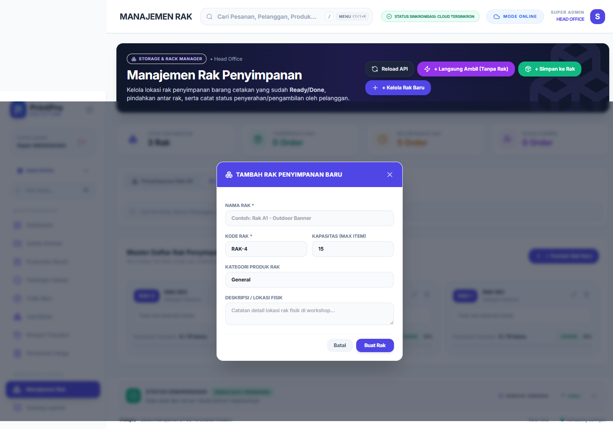
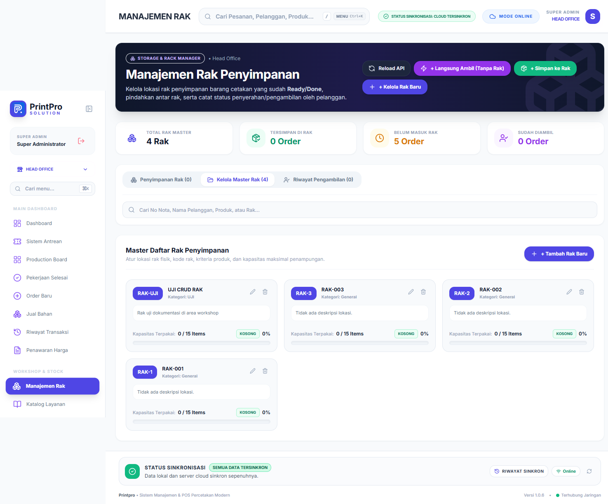
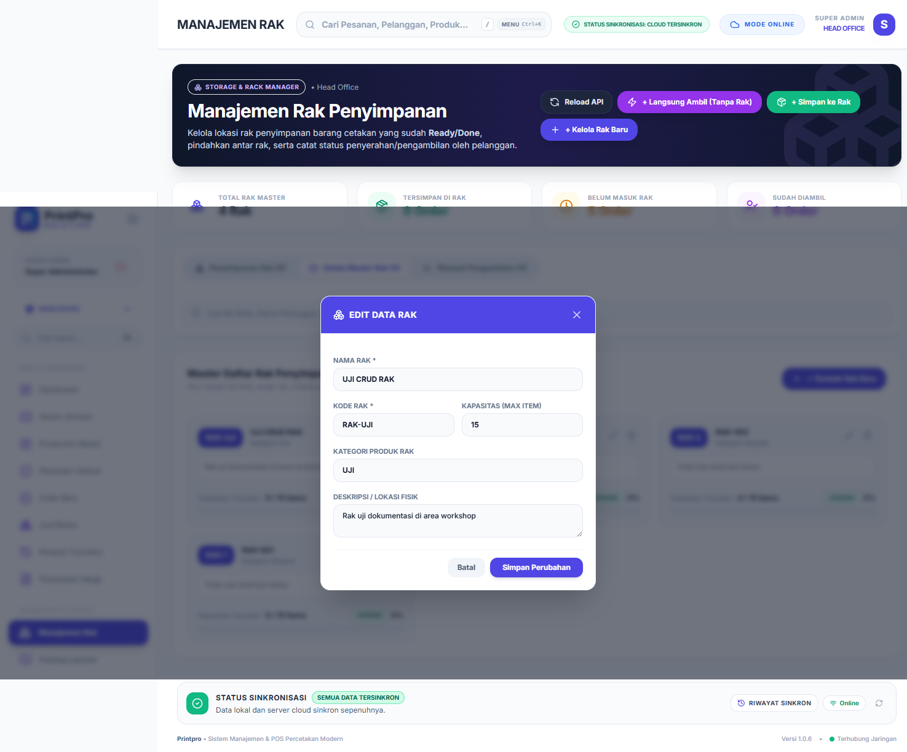
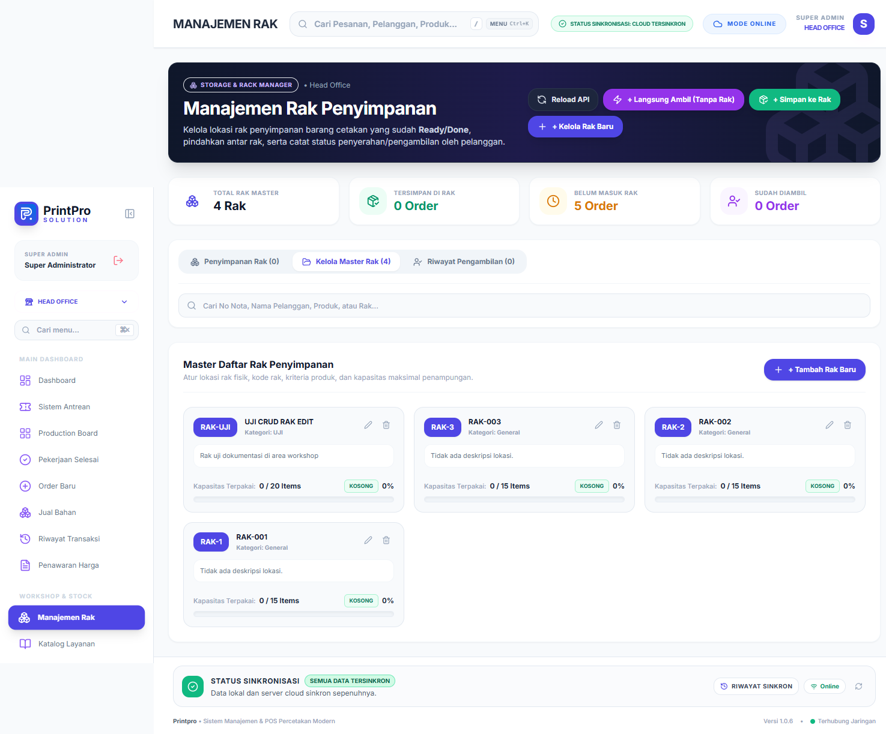
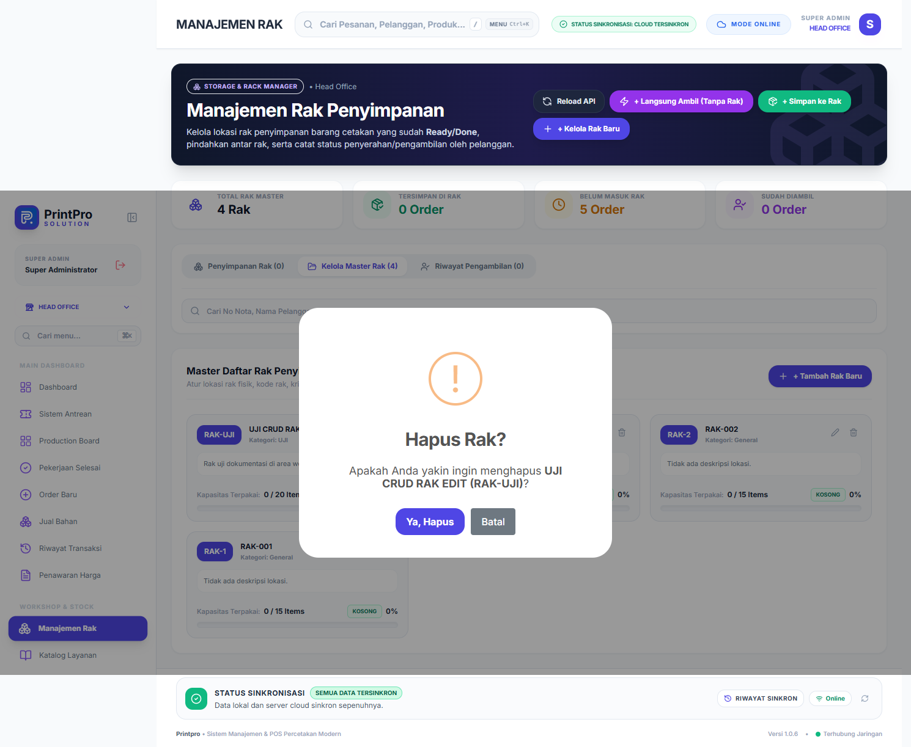
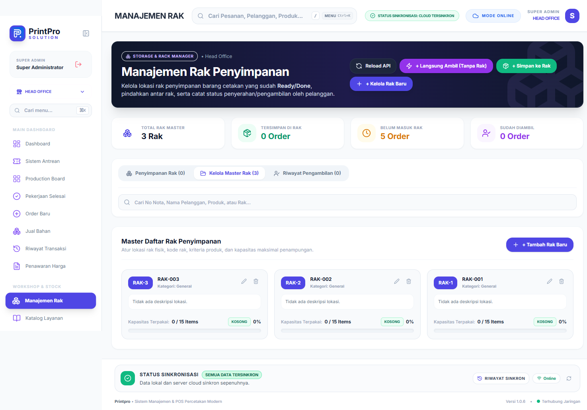

Bab 08 dari 27
Manajemen Rak Penyimpanan
Untuk order yang belum diambil, barang disimpan di rak dengan penanda lokasi.
- Buka Manajemen Rak.
- Tambahkan rak dengan kode/nama yang mudah dibaca (mis.
R1-A,RAK-BESAR-2). - Saat order selesai diproduksi tetapi belum diambil, tetapkan order ke rak.
- Pelanggan dapat menerima notifikasi berisi lokasi rak.
- Saat barang diambil, lepaskan order dari rak agar kapasitas akurat.
Gunakan kode rak yang konsisten dengan tulisan fisik di rak. Hindari mengganti nama rak yang sudah dipakai order lama.
Alur CRUD rak penyimpanan
Lihat daftar — Menu Manajemen Rak menampilkan kartu ringkasan (total rak master, tersimpan di rak, belum masuk rak, sudah diambil). Buka tab Kelola Master Rak untuk melihat daftar rak beserta tombol Edit Rak dan Hapus Rak.

Gambar 8.1 — Daftar master rak penyimpanan sebelum perubahan. Tambah rak — Klik + Tambah Rak Baru. Panel Tambah Rak Penyimpanan Baru terbuka dengan kode rak yang dibuat otomatis (mis.
RAK-4).
Gambar 8.2 — Panel tambah rak yang masih kosong. Isi detail — Masukkan Nama Rak, sesuaikan Kode Rak, tentukan Kapasitas (Max Item), Kategori Produk Rak, dan Deskripsi / Lokasi Fisik.
Gambar 8.3 — Data rak baru yang sudah diisi. Simpan dan verifikasi — Klik Buat Rak. Notifikasi Rak Ditambahkan muncul dan kartu rak baru tampil di daftar; jumlah Total Rak Master ikut bertambah.

Gambar 8.4 — Rak baru tampil pada daftar master rak. Ubah rak — Klik Edit Rak pada kartu rak. Ubah data yang diperlukan, misalnya nama atau kapasitas.

Gambar 8.5 — Panel edit rak yang sudah terisi data sebelumnya. Verifikasi perubahan — Klik Simpan Perubahan. Notifikasi Rak Diperbarui muncul dan data kartu langsung diperbarui.

Gambar 8.6 — Nama dan kapasitas rak yang sudah diperbarui. Hapus rak — Klik Hapus Rak pada kartu, lalu tekan Ya, Hapus pada dialog Hapus Rak?.

Gambar 8.7 — Dialog konfirmasi hapus rak. Verifikasi penghapusan — Muat ulang halaman. Rak uji tidak lagi muncul dan jumlah Total Rak Master kembali ke nilai semula.

Gambar 8.8 — Daftar kembali normal setelah rak uji dihapus.
Pada tab Penyimpanan Rak, gunakan tombol Set Rak untuk menempatkan order yang sudah selesai ke rak, atau LANGSUNG AMBIL bila pelanggan mengambil barang tanpa penyimpanan.